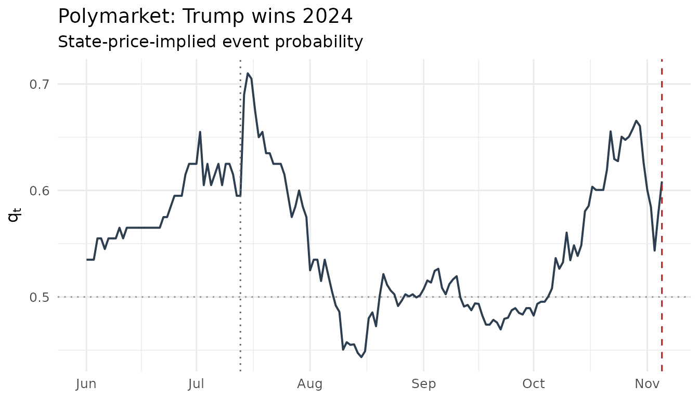

Event betas: which assets move with the event probability?
Source:vignettes/eventclock-event-betas.Rmd
eventclock-event-betas.RmdWhich assets care about an event, and how much?
The Event Clock tells you how much news about an event arrived and when. The natural next question is who cares: which stocks, currencies, or indices move when the event probability moves, and by how much?
Think of an asset whose value would be \(\eta_1\) times today’s value if the event
happens (outcome 1) and \(\eta_2\)
times today’s value if it does not (outcome 2). Then a rise of \(\Delta q\) in the event probability moves
the asset by about \[ r_t \;\approx\;
\Delta\eta \,\Delta q_t, \qquad
\Delta\eta = \eta_1 - \eta_2 . \] We call \(\Delta\eta\) the asset’s
exposure to the event: the gap between its two possible
values, as a fraction of today’s value. A regression of daily returns on
daily probability changes estimates it — that is
event_beta().
What you need: the asset’s daily prices (a data
frame with a date column and an adjusted,
close, or price column, or a ret
column with returns) and a daily event-probability series (an
event_prices object; collapse intraday prices with
pm_daily()).
Trump Media and the 2024 election
The listed stock most exposed to the 2024 U.S. presidential election was Trump Media & Technology Group (DJT). Both ingredients ship with the package:
data(djt2024)
data(polymarket2024)
head(djt2024, 3)
#> date close adjusted volume
#> 1 2024-06-03 46.74 46.74 2580800
#> 2 2024-06-04 45.49 45.49 2659800
#> 3 2024-06-05 46.75 46.75 2116300
ep <- pm_daily(as_event_prices(polymarket2024,
market_id = "Polymarket: Trump wins 2024",
event_date = as.POSIXct("2024-11-05", tz = "UTC")
))
eb <- event_beta(djt2024, ep)
eb
#> -- Event-beta regression (Newey-West, 4 lags)
#> Event exposure deta_hat = 1.4669 (se 0.3728, t = 3.93), n = 125, R^2 = 0.106
#> Model-implied levels at mean q = 0.554: eta1 = 1.6549, eta2 = 0.1881
#> (No external deta supplied: levels/loading test not identified from returns alone.)Reading the output: the estimated exposure is \(\widehat{\Delta\eta} \approx\) 1.47 with a t-statistic of 3.9 (Newey-West standard errors). In words, a ten-point rise in Trump’s win probability moved DJT by about 15%. The \(R^2\) of 0.11 says that about 11% of DJT’s daily return variance over the sample came from election news — the rest is the stock’s own (very large) volatility.
The probability is matched to each trading day by its last value on or before that day, so news that breaks over a weekend enters Monday’s return. The assassination-attempt weekend makes this visible in a single observation:
fri <- as.Date("2024-07-12"); mon <- as.Date("2024-07-15")
c(dq_points = 100 * (ep$q[ep$time == mon] - ep$q[ep$time == fri]),
return_pct = 100 * (djt2024$adjusted[djt2024$date == mon] /
djt2024$adjusted[djt2024$date == fri] - 1))
#> dq_points return_pct
#> 11.50000 31.36938Between the Friday and Monday closes the win probability rose by about 11 points and the stock by about 31%.
plot_q(ep) +
ggplot2::geom_vline(xintercept = as.Date("2024-07-13"),
linetype = 3, color = "grey40")
What returns can and cannot tell you
Returns pin down the gap \(\Delta\eta\), not the two values \(\eta_1\) and \(\eta_2\) separately. The levels in the
output (\(\eta_1 \approx\) 1.65, \(\eta_2 \approx\) 0.19) come from one extra
assumption: on average over the two outcomes, weighted by the event
probability, the asset should be worth what it is worth today, \(q\eta_1 + (1-q)\eta_2 = 1\). They are
implied by that assumption, not measured. Option prices can measure
them; see vignette("eventclock-event-spanning"), which
describes the same exposure on a log scale, \(\theta = \log(\eta_1/\eta_2)\). The two are
linked exactly by \[ \Delta\eta =
\frac{e^\theta - 1}{q\,e^\theta + 1 - q}. \]
A cross-check against options. If you have an
exposure measured elsewhere — for instance from option prices — pass it
as deta. event_beta() then reports \(\beta = \widehat{\Delta\eta}/\Delta\eta\)
and tests \(\beta = 1\): do returns
move as much as the options imply? (Testing against the regression’s own
estimate would be circular.) As an illustration, the accompanying
working paper estimates from DJT options expiring after the election
(“event-spanning” options; see
vignette("eventclock-event-spanning")) that the stock was
worth about 2.71 times as much under a Trump win as under a non-Trump
outcome:
q_bar <- eb$q_mean
deta_options <- (2.71 - 1) / (q_bar * 2.71 + 1 - q_bar)
event_beta(djt2024, ep, deta = deta_options)
#> -- Event-beta regression (Newey-West, 4 lags)
#> Event exposure deta_hat = 1.4669 (se 0.3728, t = 3.93), n = 125, R^2 = 0.106
#> Model-implied levels at mean q = 0.554: eta1 = 1.6549, eta2 = 0.1881
#> Loading vs. external deta = 0.8785: beta = 1.670 (se 0.424), H0 beta=1: z = 1.58, p = 0.115The option-implied exposure is smaller than the returns-based one, but with this little data the test cannot reject \(\beta = 1\).
Does learning matter for the asset’s options? The relevance screen
An option that expires before the event gains value from the news
that arrives while it is alive. Four levers decide whether that matters:
the exposure (squared), how movable the probability still is (\([q(1-q)]^2\), largest at 50%), the clock
\(A\) over the option’s life, and the
asset’s ordinary variance without the event (\(\sigma^2 \tau\)). Their ratio, \[ \rho = \frac{[\Delta\eta\, q(1-q)]^2 A}{\sigma^2
\tau}, \] is the variance from learning relative to ordinary
variance; the share of learning in total variance is \(\rho/(1+\rho)\), and
ec_iv_rule() translates it into implied-volatility
points.
For DJT over the last two weeks before the election — using, for
simplicity, the clock that actually materialized (to price options in
real time, use a forecast; see
vignette("eventclock-measurement")) and the volatility of
returns net of election news as the ordinary volatility:
A_2w <- event_clock(ep, from = as.Date("2024-10-22"),
to = as.Date("2024-11-05"), methods = "rv")$A
q_pre <- ep$q[ep$time == as.Date("2024-10-22")]
# ordinary volatility: daily returns net of the election component,
# annualized over 252 trading days; two weeks = 10 trading days
r <- diff(log(djt2024$adjusted))
# probability on each trading day (last value on or before it),
# matched the way event_beta() matches it
qa <- ep$q[findInterval(as.numeric(djt2024$date), as.numeric(ep$time))]
sigma_ord <- stats::sd(r - eb$deta_hat * diff(qa)) * sqrt(252)
tau <- 10 / 252
djt <- list(deta = eb$deta_hat, q = q_pre, A = A_2w,
sigma = sigma_ord, tenor = tau)
gbp <- list(deta = -0.012, q = 0.195, A = 0.166,
sigma = 0.09325, tenor = 14 / 365)
screen <- function(x) c(
rho = do.call(ec_relevance, x),
learning_share = do.call(ec_variance_share, x),
iv_points = 100 * do.call(ec_iv_rule, x)
)
rbind(`DJT, 2024 election` = screen(djt), `GBP, Brexit` = screen(gbp))
#> rho learning_share iv_points
#> DJT, 2024 election 0.229954061 0.186961504 14.262199823
#> GBP, Brexit 0.001766033 0.001762919 0.008234127For DJT, election learning was about 19% of the two-week variance — worth roughly 14 implied-volatility points, clearly first-order for its options. For the British pound around Brexit, with an exposure about a hundred times smaller, the same calculation gives a rounding error. The squared exposure decides who cares about the event.
Practical notes
- With daily returns, collapse intraday probability data first
(
pm_daily()); the probability is then matched to each trading day. - Screen the probability series with
ec_validate()and the sampling frequency withec_signature()before interpreting exposures. - Newey-West lags default to \(\lfloor
4(n/100)^{2/9} \rfloor\); pass
lags = 0for plain heteroskedasticity-robust errors. - Add market or factor returns via
controls =to separate the event channel from general market moves, e.g.event_beta(djt2024, ep, controls = market), wheremarketis a data frame with adatecolumn and one column per daily market or factor return (not price).
Where next
-
vignette("eventclock-event-spanning")— measuring the exposure from option prices, and pricing options that expire before the event; -
vignette("eventclock-brexit")— other sources of event probabilities (fed funds futures, merger spreads).